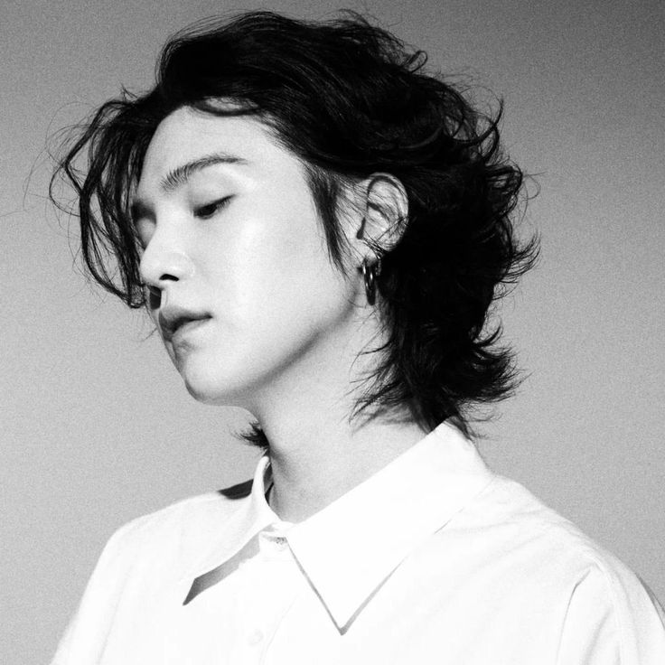
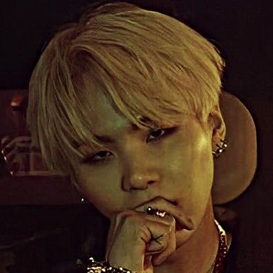

⚠ Projet pédagogique NSI • Réalisé par des élèves • Sans vocation commerciale
Agust D
Sommaire


Qui est-il ?
Min Yoon-gi, plus connu sous ses noms de scène Suga et Agust D, est un rappeur, danseur et auteur-compositeur-interprète sud-coréen né le 9 mars 1993 à Daegu.
Il est membre du boys band sud-coréen BTS.